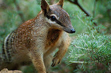

What is a Numbat?
The Numbat, nicknamed "the banded anteater" is an an endangered marsupial that is known for their pointy tongue. They have a small body, head, and ears, with long claws and a long bushy tail of about 17 cm. They also have a pointy nose. Their fur is generally a reddish brown on their head, and fades to black down the rest of the body with white stripes. And though it is a marsupial, the female numbat does not have a pouch on it's stomach as marsupials often do.
Numbat's life in the Wild
Numbats are native to forests and woodlands in Australia. They eat a diet
that exclusively consists of insects and mainly consume termites. However, they cannot easily
break into the mounds of termites and therefore must wait for them to come out of their
mounds. Because of this, a numbat's life consists around that of a termites life. While they
are predators themselves, they are also prey to an array of animals.

Why are they Endangered?
Numbats are considered to be endangered because it is estimated that there are only around 1,5000 numbats left in Western Australia. They are likely becoming more rare in part because of land-clearing and wildfires. They are mostly being hunted by predators such as foxes and cats, as well as, dogs, snakes, dingos, and feral foxes. To try and help this endangered species have a future, the Perth Zoo has been breeding Numbats into protected habitats and eventually let out into the wild. Hopefully, with your help and the cooperation of others, the Numbats can become more common and not become extinct.